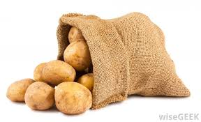
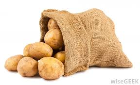
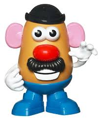

The Potato (Solanum tuberosum) originated in the Andes of South America 8,000 years ago. It was around 6,000 years ago that Incas in Peru first cultivated them. The Peruvian Quechua language records more than 1,000 words to describe potatoes and potato varieties! The potato was believed to have medicinal qualities and was rubbed on the skin of sick patients as a remedy.
 

However, the invading Spanish conquistadors centuries later also loved the Peruvians' potatoes. The Spaniards had been on the look out for gold and jewels - potatoes became one of the exotic finds they excitedly brought back to Europe to impress royalty in 1536. The word ‘potato’ known in Spanish as ‘patata’ is derived from the word ‘batata’.
In France, Antoine-August Parmentier helped King Louis XIV make the potato a popular hit in the 18th century. Having been imprisoned in Germany - where he was fed only potatoes - he knew how to create a feast of fabulous dishes all based on this one ingredient. One guest at a Parmentier Feast was legendary American statesman Benjamin Franklin. He enjoyed it so much he spread the word to the "New World" funnily enough the continent potatoes had been taken from by the Spanish. "French Fries" officially arrived in the United States of America when Thomas Jefferson served them at the White House during his presidency of 1801-1809.
The potato started being grown in London by 1597, and soon became popular in Ireland and Scotland. Popularity for the potato came during the Industrial Revolution, when demand was created for cheap, energy-rich, non-cereal foods. Potatoes went on to become the basis for many peoples' essential nutrition around the world. When a fungus destroyed the potato crop in Ireland in 1845 the death toll of the infamous Irish Potato Famine was immense.
People also began to realise quite how versatile the potato was sometimes by accident. In 1853 railway magnate Commodore Cornelius Vanderbilt sent his serving of potatoes back at a swanky restaurant in Saratoga Springs, USA. The fact that he'd rejected them for being too thick enraged the chef, George Crum. To get his own back he sarcastically sliced them incredibly thin, fried them in hot oil and threw salt all over them before sending them back to the haughty customer. To everyone's amazement, the mighty Vanderbilt absolutely loved his "Saratoga Crunch Chips" and potato crisps have been a big hit ever since.